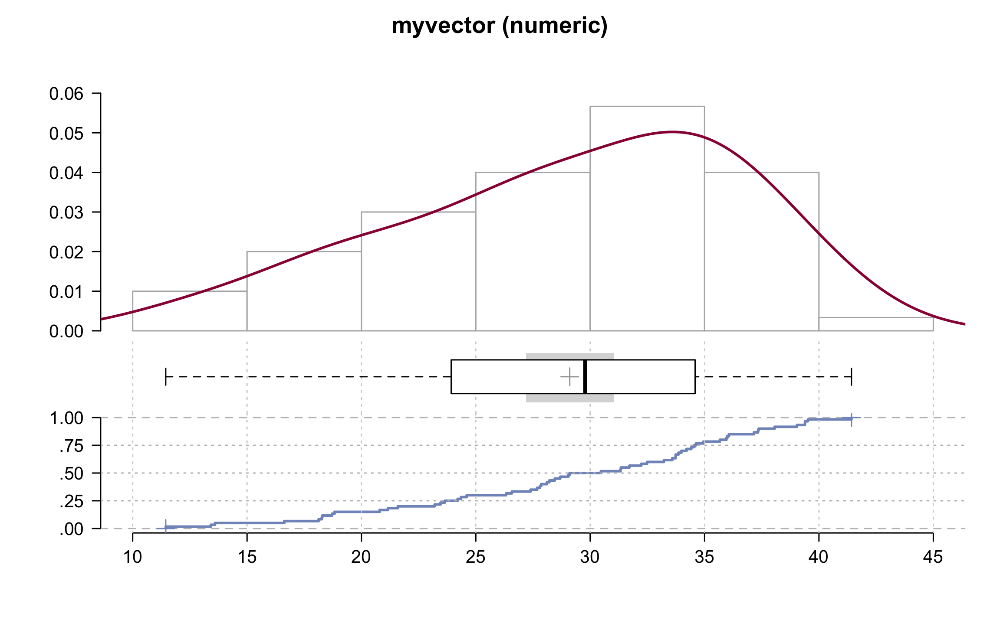

Capítulo 2 Funcionamiento básico de R
En este capitulo se va a dar una introducción al funcionamiento básico de R (R Core Team, 2019), incluyendo el uso de R como una calculadora (consola), creación de objetos, y los tipos principales objetos que se utilizan en R, así como importar y exportar datos, y unas inspecciones generales de los datos.
Se van a usar, aunque poco en este capitulo, funciones de los paquetes:
library(rio)
library(skimr)
library(psych)
library(DescTools)
library(tidyverse)
library(summarytools)2.1 Operaciones básicas
R puede funcionar como una calculadora básica, donde es posible realizar operaciones aritméticas sencillas. Los nombres de las funciones están en ingles (ej: sqrt para raíz cuadrada, round para redondeo, etc.).
Como cualquier otro programa, si se va a utilizar operaciones con ángulos (ej: cos, tan, etc.), los ángulos tienen que darse en radianes, y el resultado va a estar en radianes.
1+2## [1] 31-2## [1] -11*2## [1] 21/2## [1] 0.5sqrt(125)## [1] 11.180342.2 Crear objetos
Objetos se pueden crear usando los operadores <- o =. Al crear un objeto este no se despliega en la consola a menos que uno lo llame directamente o que a la hora de crearlo sea encerrado con paréntesis redondos ().
La idea de generar objetos es básica para los lenguajes de programación. Los objetos que se crean pueden ser reutilizados después de ser creados. Si se desean actualizar las operaciones o funciones que dependen de un objeto, solo se cambia el objeto una vez, y el resto se actualiza cuando se vuelve a correr.
Aquí se están generando los objetos x, y, y z, donde x se imprime hasta llamarlo, y se imprime al guardarlo por estar encerrado en paréntesis, y z es función de x y y.
x <- 1
(y = 2)## [1] 2x## [1] 1x + y## [1] 3z = x + y2.3 Vectores
Los vectores son unidimensionales y deben ser (contener elementos) del mismo tipo. Aquí se muestran los diferentes tipos, y como crearlos. Los más importantes tipos son Numéricos, Texto, y Factores (tipo especial en R).
2.3.1 Numéricos
Se pueden crear vectores numéricos a partir de datos puntuales, sin ningún orden, usando la función c(), y separando las entradas (elementos) por medio de comas ,.
x <- c(1,2,3,4,5)
y <- c(6,7,8,9,10)O se pueden crear vectores en secuencia (seq(from = , to = , by =, o length.out = )) o de valores repetidos (rep()). Crear vectores de valores repetidos no aplica únicamente para datos numéricos.
En seq se definen los argumentos from: valor inicial, to: valor final, y by: el intervalo, o length.out: la cantidad de elementos que quiero. En rep se define lo que se quiere repetir, y el numero de veces a repetir.
(f = 1:30)## [1] 1 2 3 4 5 6 7 8 9 10 11 12 13 14 15 16 17 18 19 20 21 22 23 24 25
## [26] 26 27 28 29 30(t1 = seq(from = 0, to = 20, by = .2))## [1] 0.0 0.2 0.4 0.6 0.8 1.0 1.2 1.4 1.6 1.8 2.0 2.2 2.4 2.6 2.8
## [16] 3.0 3.2 3.4 3.6 3.8 4.0 4.2 4.4 4.6 4.8 5.0 5.2 5.4 5.6 5.8
## [31] 6.0 6.2 6.4 6.6 6.8 7.0 7.2 7.4 7.6 7.8 8.0 8.2 8.4 8.6 8.8
## [46] 9.0 9.2 9.4 9.6 9.8 10.0 10.2 10.4 10.6 10.8 11.0 11.2 11.4 11.6 11.8
## [61] 12.0 12.2 12.4 12.6 12.8 13.0 13.2 13.4 13.6 13.8 14.0 14.2 14.4 14.6 14.8
## [76] 15.0 15.2 15.4 15.6 15.8 16.0 16.2 16.4 16.6 16.8 17.0 17.2 17.4 17.6 17.8
## [91] 18.0 18.2 18.4 18.6 18.8 19.0 19.2 19.4 19.6 19.8 20.0(t2 = seq(from = 0, to = 20, length.out = 11))## [1] 0 2 4 6 8 10 12 14 16 18 20(u = rep(5,20))## [1] 5 5 5 5 5 5 5 5 5 5 5 5 5 5 5 5 5 5 5 5rep(5:7,3)## [1] 5 6 7 5 6 7 5 6 7rep(5:7,each=3)## [1] 5 5 5 6 6 6 7 7 72.3.2 Texto (string, character)
Los vectores de texto son usualmente el precursor de vectores categóricos o factores. Se construyen de manera similar usando c(), pero cada entrada (elemento) va en comillas (doble "", o sencilla ’’).
z <- "pura vida"
z## [1] "pura vida"dias <- c("lunes","martes","miercoles","jueves","viernes")
dias## [1] "lunes" "martes" "miercoles" "jueves" "viernes"2.3.3 Categóricos (factores)
Los vectores para datos categóricos en R son llamados factores, y estos factores van a contener niveles o clases (levels). Este tipo de vector es muy utilizado en diversos análisis.
El primer tipo es un factor nominal (sin orden en los niveles/clases). Aquí se esta usando el vector de texto creado anteriormente, y simplemente se convierte a factor. La función as_factor es del paquete forcats, que se carga al cargar el tidyverse. Existe una función básica as.factor; los comportamientos son un poco diferentes, siendo la principal diferencia que as_factor ordena los niveles de acuerdo al orden de aparición, mientras que as.factor ordena los niveles de manera alfabética.
dias.f1 = as_factor(dias)
dias.f1## [1] lunes martes miercoles jueves viernes
## Levels: lunes martes miercoles jueves viernesdias.f2 = as.factor(dias)
dias.f2## [1] lunes martes miercoles jueves viernes
## Levels: jueves lunes martes miercoles viernesFactores ordinales pueden crearse usando la función básica factor, primero con el vector de datos (usualmente texto), agregando el argumento ordered = TRUE. Ademas, hay que especificar los niveles en el orden deseado con el argumento levels, donde van a ir de menor a mayor.
ordenado = factor(c('Bajo','Alto','Alto','Medio','Medio','Bajo','Alto'),
ordered = T,
levels = c('Bajo','Medio','Alto'))
ordenado## [1] Bajo Alto Alto Medio Medio Bajo Alto
## Levels: Bajo < Medio < Alto2.4 Matrices
Las matrices son representaciones multidimensionales de datos numéricos. La función para construirlas es matrix, donde se especifican los datos y el numero de filas o columnas. Por defecto inserta los datos por columna, si se quieren meter por fila se debe usar byrow = TRUE. Adicionalmente se le pueden agregar nombres a las filas y columnas con el argumento dimnames.
matrix(data = 1:15, nrow = 3)## [,1] [,2] [,3] [,4] [,5]
## [1,] 1 4 7 10 13
## [2,] 2 5 8 11 14
## [3,] 3 6 9 12 15matrix(data = 1:15, nrow = 3, byrow = T)## [,1] [,2] [,3] [,4] [,5]
## [1,] 1 2 3 4 5
## [2,] 6 7 8 9 10
## [3,] 11 12 13 14 15matrix(data = 1:15, nrow = 3, byrow = T,
dimnames = list(Filas = letters[1:3],
Columnas = LETTERS[1:5]))## Columnas
## Filas A B C D E
## a 1 2 3 4 5
## b 6 7 8 9 10
## c 11 12 13 14 152.5 DataFrames, listas y tibbles
Los vectores son unidimensionales y pueden almacenar datos (elementos) de un solo tipo. DataFrames, listas y tibbles son objetos que pueden almacenar más de 1 vector y los diferentes vectores pueden ser diferentes entre ellos. Esto es similar a una hoja de calculo donde cada columna es un vector.
Para DataFrames los contenidos pueden ser únicamente vectores de la misma longitud. Se crea usando la función data.frame, con los argumentos siendo los vectores, que van a pasar a ser las columnas. La función names brinda los nombres de las columnas, y a su vez se puede usar para renombrar a las columnas.
DF = data.frame(Visitas = x, Revision = y, Dias = dias)
DF## # A tibble: 5 x 3
## Visitas Revision Dias
## <dbl> <dbl> <fct>
## 1 1 6 lunes
## 2 2 7 martes
## 3 3 8 miercoles
## 4 4 9 jueves
## 5 5 10 viernesnames(DF)## [1] "Visitas" "Revision" "Dias"names(DF) = c("Experimento", "Valores", "Tiempo")
DF## # A tibble: 5 x 3
## Experimento Valores Tiempo
## <dbl> <dbl> <fct>
## 1 1 6 lunes
## 2 2 7 martes
## 3 3 8 miercoles
## 4 4 9 jueves
## 5 5 10 viernesPara listas los contenidos pueden ser cualquier objeto y de cualquier dimensión. Muchos de los resultados de funciones en R son listas. Estas se crean con la función list.
lst = list(Exp = x, Val = y, Dias = dias, Data = DF)
lst## $Exp
## [1] 1 2 3 4 5
##
## $Val
## [1] 6 7 8 9 10
##
## $Dias
## [1] "lunes" "martes" "miercoles" "jueves" "viernes"
##
## $Data
## Experimento Valores Tiempo
## 1 1 6 lunes
## 2 2 7 martes
## 3 3 8 miercoles
## 4 4 9 jueves
## 5 5 10 viernesTibbles son un tipo especial de DataFrame, donde la principal diferencia es que pueden tener un contenido (columna) que puede ser una lista y esto puede brindar muchas facilidades a la hora de manipular y analizar los datos. Ademas no fuerza a datos de texto a factores y en la consola se despliega de manera más amigable.
tb = tibble(Visitas = x, Revision = y,
Dias = dias, Extra = map(6:10, ~rnorm(.x)))
tb## # A tibble: 5 x 4
## Visitas Revision Dias Extra
## <dbl> <dbl> <chr> <list>
## 1 1 6 lunes <dbl [6]>
## 2 2 7 martes <dbl [7]>
## 3 3 8 miercoles <dbl [8]>
## 4 4 9 jueves <dbl [9]>
## 5 5 10 viernes <dbl [10]>2.6 Verificando objetos
Hay funciones para verificar el tipo de objeto (mode, is, class), comprobar si es de un tipo en especifico (is.*) y cambiar de un tipo a otro (as.*). Con la funcione methods(class = *) se pueden obtener los diferentes métodos o funciones disponibles para ese tipo de objeto (va a depender de los paquetes cargados).
mode(x)## [1] "numeric"is(x)## [1] "numeric" "vector" "index" "replValue"
## [5] "numLike" "number" "atomicVector" "numericVector"
## [9] "EnumerationValue" "replValueSp" "Mnumeric"class(x)## [1] "numeric"x <- c(1, 2, 3, 4, 5, 6)
methods(class = class(x))## [1] [ [<- all.equal Arith as_factor
## [6] as_mapper as.data.frame as.Date as.POSIXct as.POSIXlt
## [11] as.raster as.yearmon as.yearqtr cbind2 coerce
## [16] coerce<- Compare Desc full_seq get_skimmers
## [21] Logic months Ops rbind2 recode
## [26] rescale scale_type
## see '?methods' for accessing help and source codeAquí se agrega un elemento de texto a un vector numérico, R por defecto lo va a cambiar a texto, que se revisa con mode(x), y específicamente si es numérico con is.numeric(x). Para cambiarlo de nuevo a numérico se usa as.numeric(x).
x[6]<-"NA"
x## [1] "1" "2" "3" "4" "5" "NA"mode(x)## [1] "character"is.numeric(x)## [1] FALSEx2 <- as.numeric(x)
x2## [1] 1 2 3 4 5 NA2.7 Guardando el espacio de trabajo
Una vez se han generado objetos estos pueden ser guardados para compartir con otra gente o cargar en otra sesión para no tener que volver a generarlos.
save.image("introR.rdata")load("introR.rdata")2.8 Importando/cargando datos
La mejor opción para importar datos es usar import del paquete rio (Chan & Leeper, 2018). Uno simplemente ocupa darle la dirección del archivo que se quiere importar y la función inteligentemente escoge la forma para importarlo. Si se quiere importar un documento de Excel que contiene varias hojas, se usa import_list, donde el resultado es una lista con las diferentes hojas. El argumento setclass = 'tibble' se usa para definir que el objeto creado sea un tibble y no un DataFrame.
data("airquality")
head(airquality)## # A tibble: 6 x 6
## Ozone Solar.R Wind Temp Month Day
## <int> <int> <dbl> <int> <int> <int>
## 1 41 190 7.4 67 5 1
## 2 36 118 8 72 5 2
## 3 12 149 12.6 74 5 3
## 4 18 313 11.5 62 5 4
## 5 NA NA 14.3 56 5 5
## 6 28 NA 14.9 66 5 6# dat1 <- import(file.choose(), setclass = 'tibble')
dat1 <- import("data/LungCapData2.csv", setclass = 'tibble')
titanic <- import("data/titanic.csv", setclass = 'tibble')
lista_datos = import_list('data/datasets.xlsx', setclass = 'tibble')2.9 Exportando datos
Usar export del paquete rio. Se pueden exportar diferentes formatos. Si se exporta una lista con nombres a un Excel, cada entrada de la lista aparece en una hoja diferente.
export(airquality, "data/airquality.csv")
export(list(airquality = airquality,
mpg = mpg,
gss = gss_cat), "data/datasets.xlsx")2.10 Inspeccionando los datos
Aquí se muestran funciones básicas para explorar los datos y como acceder a ciertos datos en especifico. Dentro de las funciones más usadas están:
head: Muestra las primeras 6 filas o elementos de un DataFrame o vector (no es necesario usar esto con un Tibble ya que el Tibble muestra las primeras 10 filas por defecto)tail: Muestra las ultimas 6 filas o elementosdim: Muestra la dimensión del objetosummary: Dependiendo del objeto esta función muestra diferentes cosas, en general siendo un resumen de los contenidos del objetostr: Muestra la estructura de los datos, indicando numero de variables y observaciones, así como el tipo de variables (de nuevo esto lo muestra un Tibble por defecto)names: Muestra los nombres de los objetos; en el caso de DataFrames y tibbles los nombres de las columnas, en el caso de una lista los nombres de los objetos dentro de la lista
head(dat1)## # A tibble: 6 x 5
## Age LungCap Height Gender Smoke
## <int> <dbl> <dbl> <chr> <chr>
## 1 9 3.12 57 female no
## 2 8 3.17 67.5 female no
## 3 7 3.16 54.5 female no
## 4 9 2.67 53 male no
## 5 9 3.68 57 male no
## 6 8 5.01 61 female notail(dat1)## # A tibble: 6 x 5
## Age LungCap Height Gender Smoke
## <int> <dbl> <dbl> <chr> <chr>
## 1 16 12.6 72 male yes
## 2 16 10.8 67 male yes
## 3 15 9.18 68 male yes
## 4 18 6.56 60 female no
## 5 16 6.38 63 female yes
## 6 15 7.63 66.5 female nodim(dat1)## [1] 654 5summary(dat1)## Age LungCap Height Gender
## Min. : 3.000 Min. : 0.373 Min. :46.00 Length:654
## 1st Qu.: 8.000 1st Qu.: 3.943 1st Qu.:57.00 Class :character
## Median :10.000 Median : 5.643 Median :61.50 Mode :character
## Mean : 9.931 Mean : 5.910 Mean :61.14
## 3rd Qu.:12.000 3rd Qu.: 7.356 3rd Qu.:65.50
## Max. :19.000 Max. :15.379 Max. :74.00
## Smoke
## Length:654
## Class :character
## Mode :character
##
##
## str(dat1)## tibble [654 × 5] (S3: tbl_df/tbl/data.frame)
## $ Age : int [1:654] 9 8 7 9 9 8 6 6 8 9 ...
## $ LungCap: num [1:654] 3.12 3.17 3.16 2.67 3.69 ...
## $ Height : num [1:654] 57 67.5 54.5 53 57 61 58 56 58.5 60 ...
## $ Gender : chr [1:654] "female" "female" "female" "male" ...
## $ Smoke : chr [1:654] "no" "no" "no" "no" ...names(dat1)## [1] "Age" "LungCap" "Height" "Gender" "Smoke"Para acceder a elementos de un vector (de cualquier tipo) se usan los corchetes cuadrados [], con el numero de la posición del elemento dentro de estos. La posición se puede especificar por medio de un valor único, un rango (inicio:fin), o por medio de un vector de posiciones usando c().
t1[3:5]## [1] 0.4 0.6 0.8dias[2]## [1] "martes"ordenado[c(2,5,7)]## [1] Alto Medio Alto
## Levels: Bajo < Medio < AltoPara acceder a elementos de una lista se usa el corchete sencillo para extraer el elemento como tal, o doble corchete para extraer los contenido del elemento.
lst[1]## $Exp
## [1] 1 2 3 4 5lst[[1]]## [1] 1 2 3 4 5lst[[1]][3]## [1] 3Para acceder a los datos de una matriz o tabla (DataFrame o tibble) se usan los corchetes cuadrados [,], donde el espacio antes de la coma se usa para seleccionar filas y el espacio después para seleccionar columnas (de acuerdo al numero, o al nombre para tablas).
En tablas, para acceder a una columna como vector se pueden usar los dobles corchetes [[]] o el operados $.
dat1[,1] # primer columna## # A tibble: 654 x 1
## Age
## <int>
## 1 9
## 2 8
## 3 7
## 4 9
## 5 9
## 6 8
## 7 6
## 8 6
## 9 8
## 10 9
## # … with 644 more rowsdat1[1,] # primer fila## # A tibble: 1 x 5
## Age LungCap Height Gender Smoke
## <int> <dbl> <dbl> <chr> <chr>
## 1 9 3.12 57 female nodat1[1,1] # elemento en primer fila y columna## # A tibble: 1 x 1
## Age
## <int>
## 1 9dat1[,1:3] # columnas de la 1 a la 3## # A tibble: 654 x 3
## Age LungCap Height
## <int> <dbl> <dbl>
## 1 9 3.12 57
## 2 8 3.17 67.5
## 3 7 3.16 54.5
## 4 9 2.67 53
## 5 9 3.68 57
## 6 8 5.01 61
## 7 6 3.76 58
## 8 6 2.24 56
## 9 8 3.96 58.5
## 10 9 3.83 60
## # … with 644 more rowsdat1[,c(1,3,5)] # columnas 1, 3, y 5## # A tibble: 654 x 3
## Age Height Smoke
## <int> <dbl> <chr>
## 1 9 57 no
## 2 8 67.5 no
## 3 7 54.5 no
## 4 9 53 no
## 5 9 57 no
## 6 8 61 no
## 7 6 58 no
## 8 6 56 no
## 9 8 58.5 no
## 10 9 60 no
## # … with 644 more rowsdat1[,c("Age","Height")] # columnas por nombre## # A tibble: 654 x 2
## Age Height
## <int> <dbl>
## 1 9 57
## 2 8 67.5
## 3 7 54.5
## 4 9 53
## 5 9 57
## 6 8 61
## 7 6 58
## 8 6 56
## 9 8 58.5
## 10 9 60
## # … with 644 more rowshead(dat1[["Age"]]) # columna como vector## [1] 9 8 7 9 9 8head(dat1$Age) # columna como vector## [1] 9 8 7 9 9 8dat1["Age"] # columna por nombre## # A tibble: 654 x 1
## Age
## <int>
## 1 9
## 2 8
## 3 7
## 4 9
## 5 9
## 6 8
## 7 6
## 8 6
## 9 8
## 10 9
## # … with 644 more rowsPara columnas de tipo factor se pueden revisar los niveles con la función levels. Si una columna es de tipo texto y se quiere cambiar a factor se reescribe la columna (tabla$columna) por medio de la función factor. Ademas, si se requieren ordenar los niveles, estos se puede hacer especificando el orden deseado con el argumento levels, usando el nombre de los elementos en el vector.
levels(dat1$Smoke)## NULLdat1$Smoke = factor(dat1$Smoke,levels = c("yes","no")) # reordenar niveles
levels(dat1$Smoke)## [1] "yes" "no"summary(dat1)## Age LungCap Height Gender Smoke
## Min. : 3.000 Min. : 0.373 Min. :46.00 Length:654 yes: 65
## 1st Qu.: 8.000 1st Qu.: 3.943 1st Qu.:57.00 Class :character no :589
## Median :10.000 Median : 5.643 Median :61.50 Mode :character
## Mean : 9.931 Mean : 5.910 Mean :61.14
## 3rd Qu.:12.000 3rd Qu.: 7.356 3rd Qu.:65.50
## Max. :19.000 Max. :15.379 Max. :74.002.11 Descripciones generales (globales)
Se muestran varias funciones que generan un resumen general de un vector, o tabla dependiendo del tipo de variable presente. Estas funciones se encuentran en los paquetes skimr (Waring et al., 2019), psych (Revelle, 2020), DescTools (Signorell, 2020), y summarytools (Comtois, 2019).
set.seed(101)
myvector = rnorm(n = 60,mean = 30,sd = 8)
skim(myvector)| Name | myvector |
| Number of rows | 60 |
| Number of columns | 1 |
| _______________________ | |
| Column type frequency: | |
| numeric | 1 |
| ________________________ | |
| Group variables | None |
Variable type: numeric
| skim_variable | n_missing | complete_rate | mean | sd | p0 | p25 | p50 | p75 | p100 | hist |
|---|---|---|---|---|---|---|---|---|---|---|
| data | 0 | 1 | 29.11 | 7.42 | 11.45 | 24.06 | 29.78 | 34.57 | 41.42 | ▂▅▇▇▆ |
describe(myvector)## # A tibble: 1 x 13
## vars n mean sd median trimmed mad min max range skew kurtosis
## <dbl> <dbl> <dbl> <dbl> <dbl> <dbl> <dbl> <dbl> <dbl> <dbl> <dbl> <dbl>
## 1 1 60 29.1 7.42 29.8 29.5 7.87 11.4 41.4 30.0 -0.499 -0.671
## # … with 1 more variable: se <dbl>Desc(myvector)## ------------------------------------------------------------------------------
## myvector (numeric)
##
## length n NAs unique 0s mean meanCI
## 60 60 0 = n 0 29.10622 27.18840
## 100.0% 0.0% 0.0% 31.02404
##
## .05 .10 .25 median .75 .90 .95
## 16.47568 18.28631 24.06407 29.78292 34.56941 37.43271 39.38988
##
## range sd vcoef mad IQR skew kurt
## 29.97666 7.42400 0.25507 7.86821 10.50535 -0.49887 -0.67149
##
## lowest : 11.44538, 13.41515, 13.59754, 16.62716, 18.12898
## highest: 39.03847, 39.38978, 39.39173, 39.51883, 41.42204
dfSummary(myvector) %>% view(method = 'render')Data Frame Summary
myvector
Dimensions: 60 x 1Duplicates: 0
| No | Variable | Stats / Values | Freqs (% of Valid) | Valid | Missing |
|---|---|---|---|---|---|
| 1 | myvector [numeric] | Mean (sd) : 29.1 (7.4) min < med < max: 11.4 < 29.8 < 41.4 IQR (CV) : 10.5 (0.3) | 60 distinct values | 60 (100%) | 0 (0%) |
Generated by summarytools 0.9.4 (R version 3.6.0)
2020-05-22
skim(airquality)| Name | airquality |
| Number of rows | 153 |
| Number of columns | 6 |
| _______________________ | |
| Column type frequency: | |
| numeric | 6 |
| ________________________ | |
| Group variables | None |
Variable type: numeric
| skim_variable | n_missing | complete_rate | mean | sd | p0 | p25 | p50 | p75 | p100 | hist |
|---|---|---|---|---|---|---|---|---|---|---|
| Ozone | 37 | 0.76 | 42.13 | 32.99 | 1.0 | 18.00 | 31.5 | 63.25 | 168.0 | ▇▃▂▁▁ |
| Solar.R | 7 | 0.95 | 185.93 | 90.06 | 7.0 | 115.75 | 205.0 | 258.75 | 334.0 | ▅▃▅▇▅ |
| Wind | 0 | 1.00 | 9.96 | 3.52 | 1.7 | 7.40 | 9.7 | 11.50 | 20.7 | ▂▇▇▃▁ |
| Temp | 0 | 1.00 | 77.88 | 9.47 | 56.0 | 72.00 | 79.0 | 85.00 | 97.0 | ▂▃▇▇▃ |
| Month | 0 | 1.00 | 6.99 | 1.42 | 5.0 | 6.00 | 7.0 | 8.00 | 9.0 | ▇▇▇▇▇ |
| Day | 0 | 1.00 | 15.80 | 8.86 | 1.0 | 8.00 | 16.0 | 23.00 | 31.0 | ▇▇▇▇▆ |
describe(airquality)## # A tibble: 6 x 13
## vars n mean sd median trimmed mad min max range skew
## <int> <dbl> <dbl> <dbl> <dbl> <dbl> <dbl> <dbl> <dbl> <dbl> <dbl>
## 1 1 116 42.1 33.0 31.5 37.8 25.9 1 168 167 1.21
## 2 2 146 186. 90.1 205 190. 98.6 7 334 327 -0.419
## 3 3 153 9.96 3.52 9.7 9.87 3.41 1.7 20.7 19 0.341
## 4 4 153 77.9 9.47 79 78.3 8.90 56 97 41 -0.371
## 5 5 153 6.99 1.42 7 6.99 1.48 5 9 4 -0.00234
## 6 6 153 15.8 8.86 16 15.8 11.9 1 31 30 0.00260
## # … with 2 more variables: kurtosis <dbl>, se <dbl>Desc(airquality)## ------------------------------------------------------------------------------
## Describe airquality (data.frame):
##
## data frame: 153 obs. of 6 variables
## 111 complete cases (72.5%)
##
## Nr ColName Class NAs Levels
## 1 Ozone integer 37 (24.2%)
## 2 Solar.R integer 7 (4.6%)
## 3 Wind numeric .
## 4 Temp integer .
## 5 Month integer .
## 6 Day integer .
##
##
## ------------------------------------------------------------------------------
## 1 - Ozone (integer)
##
## length n NAs unique 0s mean meanCI
## 153 116 37 67 0 42.13 36.06
## 75.8% 24.2% 0.0% 48.20
##
## .05 .10 .25 median .75 .90 .95
## 7.75 11.00 18.00 31.50 63.25 87.00 108.50
##
## range sd vcoef mad IQR skew kurt
## 167.00 32.99 0.78 25.95 45.25 1.21 1.11
##
## lowest : 1, 4, 6, 7 (3), 8
## highest: 115, 118, 122, 135, 168## ------------------------------------------------------------------------------
## 2 - Solar.R (integer)
##
## length n NAs unique 0s mean meanCI
## 153 146 7 117 0 185.93 171.20
## 95.4% 4.6% 0.0% 200.66
##
## .05 .10 .25 median .75 .90 .95
## 24.25 47.50 115.75 205.00 258.75 288.50 311.50
##
## range sd vcoef mad IQR skew kurt
## 327.00 90.06 0.48 98.59 143.00 -0.42 -1.00
##
## lowest : 7, 8, 13, 14, 19
## highest: 320, 322 (2), 323, 332, 334
## ------------------------------------------------------------------------------
## 3 - Wind (numeric)
##
## length n NAs unique 0s mean meanCI
## 153 153 0 31 0 9.96 9.39
## 100.0% 0.0% 0.0% 10.52
##
## .05 .10 .25 median .75 .90 .95
## 4.60 5.82 7.40 9.70 11.50 14.90 15.50
##
## range sd vcoef mad IQR skew kurt
## 19.00 3.52 0.35 3.41 4.10 0.34 0.03
##
## lowest : 1.7, 2.3, 2.8, 3.4, 4.0
## highest: 16.1, 16.6 (3), 18.4, 20.1, 20.7
##
## heap(?): remarkable frequency (9.8%) for the mode(s) (= 11.5)## ------------------------------------------------------------------------------
## 4 - Temp (integer)
##
## length n NAs unique 0s mean meanCI
## 153 153 0 40 0 77.88 76.37
## 100.0% 0.0% 0.0% 79.39
##
## .05 .10 .25 median .75 .90 .95
## 60.20 64.20 72.00 79.00 85.00 90.00 92.00
##
## range sd vcoef mad IQR skew kurt
## 41.00 9.47 0.12 8.90 13.00 -0.37 -0.46
##
## lowest : 56, 57 (3), 58 (2), 59 (2), 61 (3)
## highest: 92 (5), 93 (3), 94 (2), 96, 97## ------------------------------------------------------------------------------
## 5 - Month (integer)
##
## length n NAs unique 0s mean meanCI
## 153 153 0 5 0 6.99 6.77
## 100.0% 0.0% 0.0% 7.22
##
## .05 .10 .25 median .75 .90 .95
## 5.00 5.00 6.00 7.00 8.00 9.00 9.00
##
## range sd vcoef mad IQR skew kurt
## 4.00 1.42 0.20 1.48 2.00 -0.00 -1.32
##
##
## level freq perc cumfreq cumperc
## 1 5 31 20.3% 31 20.3%
## 2 6 30 19.6% 61 39.9%
## 3 7 31 20.3% 92 60.1%
## 4 8 31 20.3% 123 80.4%
## 5 9 30 19.6% 153 100.0%
##
## heap(?): remarkable frequency (20.3%) for the mode(s) (= 5, 7, 8)## ------------------------------------------------------------------------------
## 6 - Day (integer)
##
## length n NAs unique 0s mean meanCI
## 153 153 0 31 0 15.80 14.39
## 100.0% 0.0% 0.0% 17.22
##
## .05 .10 .25 median .75 .90 .95
## 2.00 4.00 8.00 16.00 23.00 28.00 29.40
##
## range sd vcoef mad IQR skew kurt
## 30.00 8.86 0.56 11.86 15.00 0.00 -1.22
##
## lowest : 1 (5), 2 (5), 3 (5), 4 (5), 5 (5)
## highest: 27 (5), 28 (5), 29 (5), 30 (5), 31 (3)dfSummary(airquality) %>% view(method = 'render')Data Frame Summary
airquality
Dimensions: 153 x 6Duplicates: 0
| No | Variable | Stats / Values | Freqs (% of Valid) | Valid | Missing | ||||||||||||||||||||||||||||||
|---|---|---|---|---|---|---|---|---|---|---|---|---|---|---|---|---|---|---|---|---|---|---|---|---|---|---|---|---|---|---|---|---|---|---|---|
| 1 | Ozone [integer] | Mean (sd) : 42.1 (33) min < med < max: 1 < 31.5 < 168 IQR (CV) : 45.2 (0.8) | 67 distinct values | 116 (75.82%) | 37 (24.18%) | ||||||||||||||||||||||||||||||
| 2 | Solar.R [integer] | Mean (sd) : 185.9 (90.1) min < med < max: 7 < 205 < 334 IQR (CV) : 143 (0.5) | 117 distinct values | 146 (95.42%) | 7 (4.58%) | ||||||||||||||||||||||||||||||
| 3 | Wind [numeric] | Mean (sd) : 10 (3.5) min < med < max: 1.7 < 9.7 < 20.7 IQR (CV) : 4.1 (0.4) | 31 distinct values | 153 (100%) | 0 (0%) | ||||||||||||||||||||||||||||||
| 4 | Temp [integer] | Mean (sd) : 77.9 (9.5) min < med < max: 56 < 79 < 97 IQR (CV) : 13 (0.1) | 40 distinct values | 153 (100%) | 0 (0%) | ||||||||||||||||||||||||||||||
| 5 | Month [integer] | Mean (sd) : 7 (1.4) min < med < max: 5 < 7 < 9 IQR (CV) : 2 (0.2) |
|
153 (100%) | 0 (0%) | ||||||||||||||||||||||||||||||
| 6 | Day [integer] | Mean (sd) : 15.8 (8.9) min < med < max: 1 < 16 < 31 IQR (CV) : 15 (0.6) | 31 distinct values | 153 (100%) | 0 (0%) |
Generated by summarytools 0.9.4 (R version 3.6.0)
2020-05-22
2.12 Recursos
Se presentan recursos a consultar para ahondar más en los temas presentados.
Referencias
Chan, C.-h., & Leeper, T. J. (2018). rio: A Swiss-Army Knife for Data I/O. Recuperado a partir de https://CRAN.R-project.org/package=rio
Comtois, D. (2019). summarytools: Tools to Quickly and Neatly Summarize Data. Recuperado a partir de https://CRAN.R-project.org/package=summarytools
R Core Team. (2019). R: A Language and Environment for Statistical Computing. Vienna, Austria: R Foundation for Statistical Computing. Recuperado a partir de https://www.R-project.org/
Revelle, W. (2020). psych: Procedures for Psychological, Psychometric, and Personality Research. Recuperado a partir de https://CRAN.R-project.org/package=psych
Signorell, A. (2020). DescTools: Tools for Descriptive Statistics. Recuperado a partir de https://CRAN.R-project.org/package=DescTools
Waring, E., Quinn, M., McNamara, A., Arino de la Rubia, E., Zhu, H., & Ellis, S. (2019). skimr: Compact and Flexible Summaries of Data. Recuperado a partir de https://CRAN.R-project.org/package=skimr